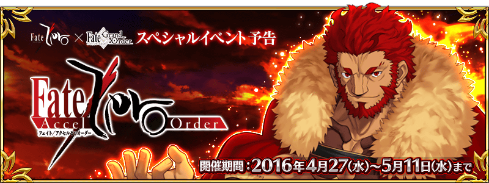

Fate/Zero×Fate/Grand Order特別活動「Fate/Accel Zero Order」舉辦決定！
送上Fate/Zero的原作者虚淵玄親自執筆的原創故事，舉辦特別活動！
終於，那位征服王伊斯坎達爾在Fate/Grand Order的世界登場！
無論如何請盡情享受在Fate/Grand Order內描寫的再1次的第四次聖杯戰爭！
◆參加條件◆
僅有通過「特異典F 炎上汙染都市 冬木」的Master方能參加

在Fate/Grand Order官方網站內的首頁及展覽室，公開了特別活動的電視廣告。
請務必藉此確認。

2016年4月20日(三)在Niconico生放送播送特別節目「迦爾帝亞放送局 Vol.2 Fate/Zero特別活動紀念放送」。
在此節目會發表關於Fate/Zero×Fate/Grand Order特別活動的最新情報！
另外也會同時舉辦與節目聯動紀念Fate/Zero×Fate/Grand Order特別活動舉辦的宣傳活動！
詳情請從下列網址確認。
節目頁面：
http://live.nicovideo.jp/watch/lv257168350
節目聯動宣傳活動特設頁面：
http://cp.fate-go.jp/fate/zero/
◆節目標題◆
「迦爾帝亞放送局 Vol.2 Fate/Zero特別活動紀念放送」
◆放送時間◆
2016年4月20日(三) 19：00～（預定約2小時）
◆出演者◆
川澄綾子（聲優）
島﨑信長（聲優）
種田梨沙（聲優）
マフィア梶田（主持）
開發團隊 安生（DELiGHTWORKS）
宣傳擔當 川村（DELiGHTWORKS）